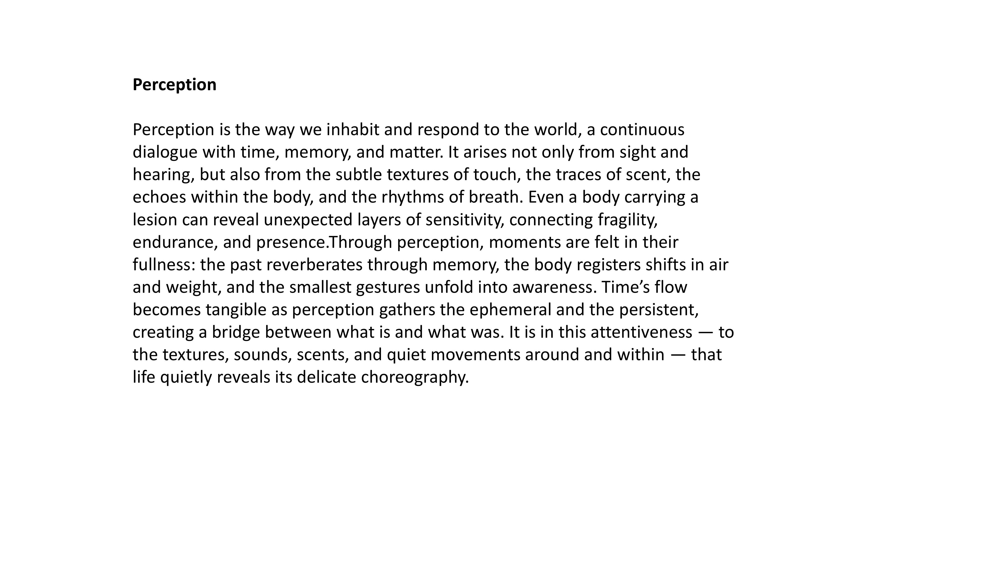
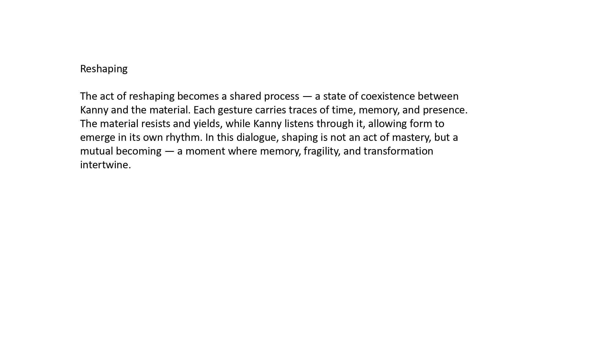

Deep listening unfolds as a sensorial practice — a way of attuning to the fragile boundaries between body, matter, and the world. It emphasizes the intimate perception of subtle sounds and materials, exploring how listening can create a dialogue with space, memory, and sensation. Each track provides textures that reveal hidden layers, allowing for personal interpretation and interaction.
By layering and combining these soundscapes, the audience experiences a fluid, immersive environment. These recordings capture delicate resonances, the whispers of materials, and ambient moments that would otherwise remain unnoticed.
These tracks can be played individually or simultaneously, allowing the audience to freely combine sounds and experience unique combinations.